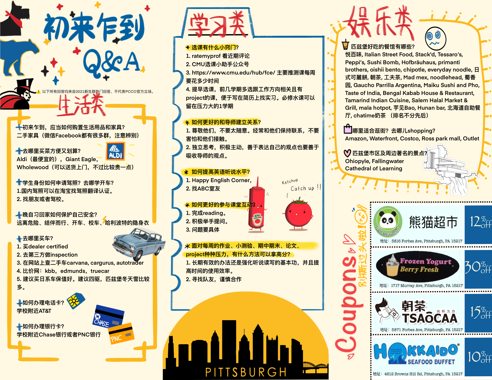
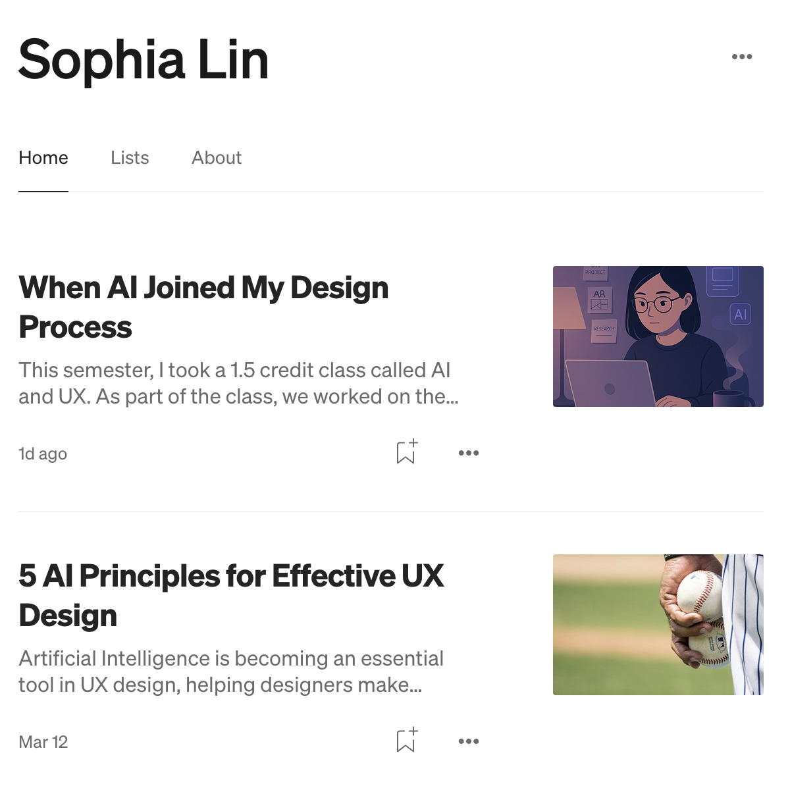
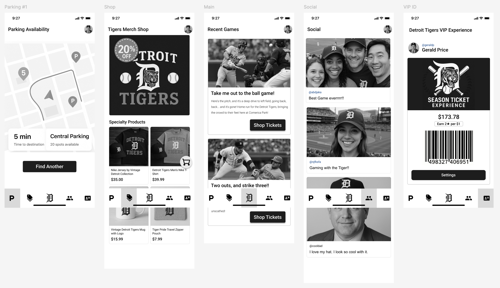

Community Event Designs
Created posters, brochures, and event branding for Pittsburgh Chinese Church Oakland, celebrating cultural festivals, student outreach, and faith-centered community life.

YouTube Branding & Thumbnails
Designed YouTube thumbnails, Zoom backgrounds, and a cover poster for a University of Pittsburgh student theater production filmed entirely during COVID-19. Adapted projection design skills into digital assets to support remote storytelling and audience engagement.


AI in UX Workflow
Explored how AI tools like ChatGPT, Recraft.ai, and Wireframe Designer can support UX workflows. Designed a Detroit Tigers fan app prototype using AI-assisted wireframing, and reflected on best practices through articles published on Medium. This project combines hands-on creation with critical thinking about emerging design tools.

XR Potion Classroom Experience
Prototyped an interactive potion classroom using Spacial.io, focusing on narrative worldbuilding, spatial interaction design, and immersive education storytelling.